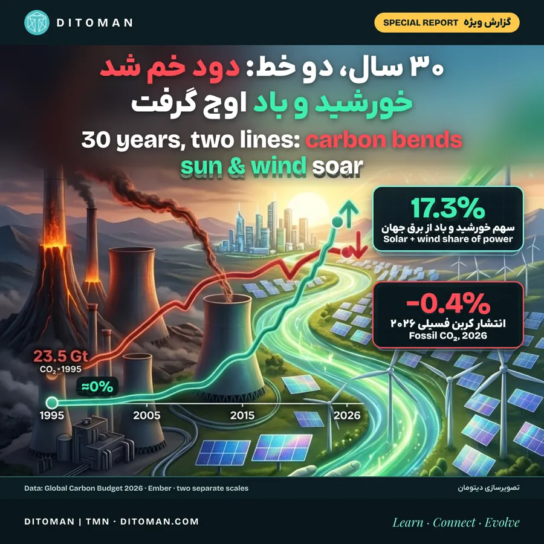
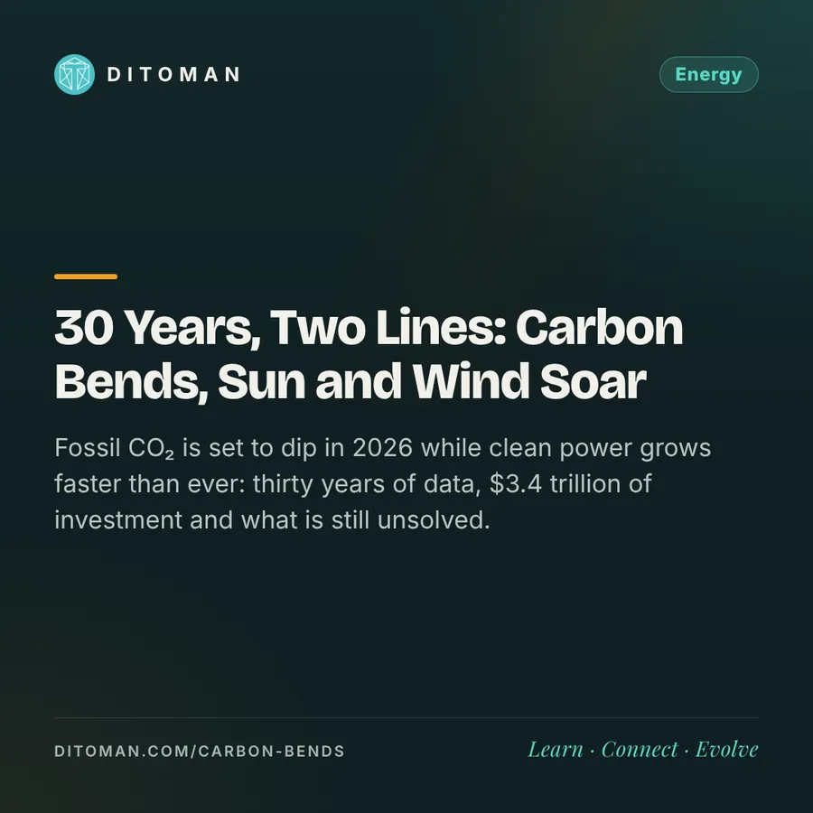

۳۰ سال، دو خط: دود خم شد، خورشید و باد اوج گرفت
30 years, two lines: carbon bends, sun and wind soar
Fossil CO₂ is set to dip in 2026 while clean power grows faster than ever: thirty years of data, $3.4 trillion of investment and what is still unsolved.
انتشار کربن فسیلی در ۲۰۲۶ کم میشود و برق پاک تندتر از همیشه رشد میکند: سی سال داده، ۳٫۴ تریلیون دلار سرمایهگذاری و آنچه هنوز حل نشده.
انتشار کربن سوختهای فسیلی امسال کم میشود: ۰٫۴٪ کمتر از پارسال، یعنی ۳۸٫۲ میلیارد تن. این برآورد «بودجهی جهانی کربن ۲۰۲۶» است که ۱۰ نوامبر ۲۰۲۶ منتشر شد Global Carbon Budget.
همزمان، خورشید و باد که سی سال پیش تقریباً هیچ سهمی در برق دنیا نداشتند، در ۲۰۲۵ به ۱۷٫۳٪ رسیدند Ember.
این دو عدد را کنار هم میگذاریم و با هم دنبال میکنیم: سی سال گذشته چه شد، امسال چه چیزی فرق کرد، چقدر پول وارد این حوزه شده، چه چیزهایی هنوز حل نشده و این تغییر در زندگی مردم چه اثری دارد.
۰۱. خبر: امسال چه شد؟
بودجهی جهانی کربن گزارش سالانهی گروهی بینالمللی از دانشمندان است که انتشار و جذب CO₂ را حساب میکند. برآورد امسال برای سوختهای فسیلی Global Carbon Budget:
- نفت: ۱٫۹٪ کاهش
- گاز طبیعی: ۰٫۳٪ کاهش
- زغالسنگ: ۰٫۶٪ افزایش
- چین ۰٫۹٪ کاهش، آمریکا ۱٫۳٪ کاهش، اتحادیهی اروپا ۱٫۵٪ کاهش، ژاپن ۱٪ کاهش، هند ۴٫۴٪ افزایش
گزارش دو دلیل میآورد. اول، شوک انرژی پس از جنگ ایران که قیمت نفت را بالا برد، عرضه را محدود کرد و مصرف نفت را پایین آورد؛ کاهش پروازها در خاورمیانه هم بخشی از افت انتشار هوانوردی را توضیح میدهد. دوم، رشد خورشید، باد و خودروی برقی که حالا حدود دوسوم افزایش تقاضای انرژی دنیا را پوشش میدهند.
این اولین کاهش تاریخ نیست. انتشار در بحران مالی ۲۰۰۹ و در سال کرونا (۲۰۲۰) هم پایین آمد و هر بار دوباره بالا رفت. تفاوت امسال این است که کاهش همزمان با سریعترین رشد برق پاک رخ داده است.
۰۲. سی سال، دو خط
| سال | انتشار CO₂ فسیلی (میلیارد تن) | سهم خورشید و باد از برق جهان |
|---|---|---|
| ۱۹۹۵ | ۲۳٫۵ | ناچیز |
| ۲۰۰۰ | ۲۵٫۵ | ناچیز |
| ۲۰۰۵ | ۲۹٫۶ | — |
| ۲۰۱۰ | ۳۳٫۳ | — |
| ۲۰۱۵ | ۳۵٫۴ | ۴٫۵٪ |
| ۲۰۲۰ | ۳۵٫۲ (سال کرونا) | — |
| ۲۰۲۴ | ۳۸٫۶ | — |
| ۲۰۲۵ | حدود ۳۸٫۴ (محاسبهی دیتومان) | ۱۷٫۳٪ |
| ۲۰۲۶ | ۳۸٫۲ (برآورد) | — |
انتشار از ۱۹۹۵ تا ۲۰۲۴ حدود ۶۴٪ بیشتر شد سری زمانی بودجهی کربن. در همین مدت برق خورشیدی از عددی ناچیز به ۲۵۶ تراواتساعت در ۲۰۱۵، ۱٬۳۳۳ در ۲۰۲۲ و ۲٬۷۷۸ تراواتساعت در ۲۰۲۵ رسید؛ یعنی در ده سال بیش از ده برابر شد Ember.
چند نقطهی عطف سال ۲۰۲۵ Ember:
- تجدیدپذیرها (با برقآبی) ۳۳٫۸٪ برق جهان را ساختند و برای اولین بار از زغالسنگ (۳۳٪) جلو زدند.
- خورشید برای اولین بار از باد جلو زد: ۲٬۷۷۸ در برابر ۲٬۷۱۵ تراواتساعت.
- خورشید و باد ۹۹٪ رشد تقاضای برق دنیا را تأمین کردند؛ خورشید بهتنهایی ۷۵٪.
- تولید برق فسیلی ۰٫۲٪ کم شد؛ اولین سال بدون افزایش از ۲۰۲۰.
- آلایندگی هر کیلوواتساعت برق از ۵۳۳ گرم CO₂ در ۲۰۱۵ به ۴۵۸ گرم رسید.
توضیح نمودار کاور: خط قرمز و خط سبز دو مقیاس جدا دارند. در خط سبز فقط عددهای ۲۰۱۵ و ۲۰۲۵ با منبع تطبیق داده شده و نقطههای میانی تقریبیاند.
۰۳. پول کجا میرود؟
آژانس بینالمللی انرژی در گزارش «سرمایهگذاری جهانی انرژی ۲۰۲۶» برآورد کرده است IEA:
| بخش | سرمایهگذاری ۲۰۲۶ |
|---|---|
| کل سرمایهگذاری انرژی | ۳٫۴ تریلیون دلار، ۵٪ بیشتر از ۲۰۲۵ |
| انرژی پاک (تجدیدپذیر، هستهای، شبکه، ذخیرهسازی، بهرهوری) | حدود ۲٫۲ تریلیون دلار |
| نفت، گاز و زغالسنگ | حدود ۱٫۲ تریلیون دلار |
| برق تجدیدپذیر | حدود ۶۶۵ میلیارد دلار |
| خورشیدی | ۳۶۵ میلیارد دلار؛ روزی ۱ میلیارد دلار روی آفتاب |
| بادی | ۲۰۰ میلیارد دلار |
| شبکهی برق | حدود ۵۵۰ میلیارد دلار، نزدیک ۲۰٪ رشد |
| باتری نیروگاهی | بیش از ۱۰۰ میلیارد دلار |
| گاز طبیعی | حدود ۳۳۰ میلیارد دلار |
| زغالسنگ | ۱۸۰ میلیارد دلار، بالاترین از ۲۰۱۲ |
یعنی به ازای هر ۱ دلاری که در سوخت فسیلی خرج میشود، حدود ۱٫۸ دلار به انرژی پاک میرود. دلیلش بیشتر اقتصادی است: هزینهی ساخت هر گیگاوات نیروگاه خورشیدی از حدود ۳ میلیارد دلار در ۲۰۱۵ به حدود ۰٫۷ میلیارد دلار در ۲۰۲۵ رسیده است IEA / Down To Earth. قیمت باتری هم در ۲۰۲۵ حدود ۴۵٪ پایین آمد Ember.
۰۴. موتور اصلی: چین
- در نیمهی اول ۲۰۲۶، تجدیدپذیرها ۴۱٫۲٪ برق چین را ساختند و سهم زغالسنگ با ۴۹٫۷٪ برای اولین بار در یک نیمسال زیر ۵۰٪ آمد شینهوا.
- خورشید و باد در همین شش ماه ۱٫۲۵ تریلیون کیلوواتساعت برق ساختند؛ تقریباً یکچهارم برق چین (محاسبهی دیتومان از همان دادهها). به زبان ساده: از هر ۴ کلید برقی که در چین میزنند، ۱ تایش از آفتاب و باد است.
- ظرفیت نصبشدهی تجدیدپذیر چین تا پایان ژوئن ۲۰۲۶ به ۲٫۴۵۵ میلیارد کیلووات رسید، بیش از ۶۰٪ کل ظرفیت برق کشور TechNode.
- سهم چین از رشد جهانی تجدیدپذیرها در پنج سال آینده از ۶۰٪ به ۵۳٪ میرسد؛ نه به این دلیل که چین کند شده، بلکه چون هند، جنوب شرق آسیا، آفریقا و خاورمیانه سریعتر شدهاند IEA Renewables 2026.
۰۵. چرا حالا؟ از محیط زیست تا امنیت انرژی
مدیر آژانس بینالمللی انرژی میگوید محرک اصلی رشد تجدیدپذیرها امروز «امنیت انرژی» است: دولتها میخواهند کمتر به سوخت وارداتی و قیمتهای پرنوسان وابسته باشند IEA Renewables 2026. عددش هم هست: سرمایهگذاری در انرژی پاک، برقیسازی و بهرهوری در ۲۰۲۵ حدود ۲۶۰ میلیارد دلار از هزینهی واردات سوخت چین، اتحادیهی اروپا، ژاپن و کره، جنوب شرق آسیا و هند کم کرد؛ ۱۱۰ میلیارد دلارش فقط در چین IEA / Down To Earth.
۰۶. اثر در زندگی مردم
- برق ارزانتر: وقتی هزینهی ساخت نیروگاه خورشیدی ۸۰٪ کم میشود، برق تازه در بیشتر کشورها ارزانتر تولید میشود.
- برق برای خانههایی که شبکهی مطمئن ندارند: پنلهای پشتبامی از ۲۰۲۲ دسترسی به برق را برای دستکم ۷۰ میلیون خانوار بهتر کردهاند؛ پاکستان، آفریقای جنوب صحرا و جنوب شرق آسیا پیشتازند IEA Renewables 2026.
- هوای پاکتر: هر کیلوواتساعتی که از خورشید و باد میآید دود نیروگاه و خودرو را کم میکند.
- اقتصاد مقاومتر: کشوری که سوخت کمتری وارد میکند، از شوک قیمت کمتر آسیب میبیند.
۰۷. آنچه هنوز حل نشده
- بخشی از کاهش امسال از شوک قیمت آمده است. نویسندگان گزارش میگویند کاهشی که از شوک ژئوپلیتیک میآید راهحل پایدار نیست و یک سال کاهش هنوز «قله» به حساب نمیآید Global Carbon Budget.
- با حساب تغییر کاربری زمین (مثل جنگلزدایی)، کل انتشار CO₂ امسال از ۴۲٫۸ به ۴۳٫۳ میلیارد تن میرسد Global Carbon Budget.
- غلظت CO₂ هوا ۴۲۷٫۷ ppm است، ۵۴٪ بالاتر از پیش از صنعتیشدن Global Carbon Budget.
- بودجهی کربنی که مانده تا زمین بیش از ۱٫۵ درجه گرم نشود ۱۵۰ میلیارد تن است؛ با سرعت فعلی کمتر از چهار سال Global Carbon Budget.
- زغالسنگ هنوز رشد میکند و سرمایهگذاری در آن بالاترین رقم از ۲۰۱۲ است IEA.
- هزینهی تأمین مالی در اقتصادهای در حال توسعه دستکم دو برابر کشورهای پیشرفته است IEA / Down To Earth.
۰۸. پنج سال آینده
آژانس بینالمللی انرژی پیشبینی میکند از ۲۰۲۶ تا ۲۰۳۱ حدود ۴٬۸۰۰ گیگاوات ظرفیت تجدیدپذیر تازه ساخته شود، ۶۰٪ بیشتر از شش سال قبل، که سهچهارمش خورشیدی است. سهم تجدیدپذیرها از برق جهان از یکسوم به نزدیک نصف میرسد IEA Renewables 2026. یکی از نویسندگان بودجهی کربن هم میگوید اگر این رشد باز هم تندتر شود، روند انتشار میتواند ظرف چند سال برگردد Global Carbon Budget.
۰۹. نگاه دیتومان
کاهش امسال کوچک است و هنوز شکننده. ولی پشت آن چیزی هست که با پایین آمدن قیمت نفت برنمیگردد: نیروگاههایی که ساخته شدهاند و برقی که ارزانتر شده است. سی سال پیش برق پاک گران بود و حالا در بیشتر دنیا ارزانترین گزینه است. این بخش تحلیل دیتومان است، نه دادهی گزارشها.
منابع
- انتشار کربن: Global Carbon Budget 2026 · سری زمانی ۱۹۹۵–۲۰۲۴
- برق: Ember Global Electricity Review 2026 · Ember، عرضه و تقاضا
- سرمایهگذاری: IEA World Energy Investment 2026 / Mercom · Down To Earth
- چشمانداز: IEA Renewables 2026 / The Energy Mix
- چین: شینهوا / gov.cn · TechNode
آخرین بازبینی: ۱۹ آبان ۱۴۰۵. عدد ۲۰۲۶ برآورد است و نهایی نیست. عدد ۲۰۲۵ را دیتومان از «۳۸٫۲ میلیارد تن با ۰٫۴٪ کاهش» حساب کرده است.